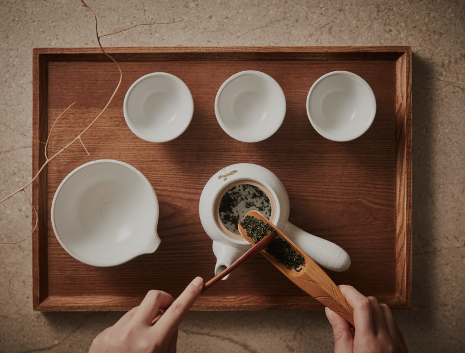

Exploring the Charms
of Tea as Tea Experts
Tea Sommelier
A tea sommelier specializes in harmonizing tea with food and suggests tea and food pairings to customers.
They understand various types of tea, their origins, quality, aroma, and taste and recommend tea to customers based on this knowledge.
-

Tea Blending Expert
A tea blending expert refers to a professional who blends or combines teas to achieve desired flavors, aromas, quality, and other characteristics.
Tea blending experts understand various types of tea and their characteristics, creating unique flavors and aromas through the blending process.
-

Tea Varietal Expert
A tea varietal expert possesses specialized knowledge about various tea varieties or tea variations and understands the flavors and characteristics of each variety.
They explain the differences between tea varieties and assist customers in choosing teas.